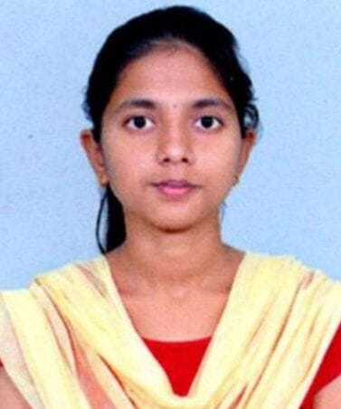

EDUCATION
B.Tech – Computer Science and Engineering
Siddartha Institute of Science and Technology
AI & Data Science · CGPA 8.56COMPUTER SCIENCE · JAVA DEVELOPMENT
B.Tech graduate in Computer Science and Engineering, specializing in Artificial Intelligence and Data Science. Focused on Core Java, OOP concepts, SQL and building a strong foundation in Spring and Spring Boot.

LOGIC · DATABASES · APPLICATIONS
I am Masi Reddy Santhi, a B.Tech graduate in Computer Science and Engineering, specializing in Artificial Intelligence and Data Science, from Siddartha Institute of Science and Technology. I graduated with a CGPA of 8.56.
My technical focus is Java development, with knowledge of Core Java, object-oriented programming, SQL and web technologies. I am strengthening my backend development skills by learning Spring and Spring Boot.
I have worked on academic projects including a Weapon Detection System using Deep Learning with YOLOv3. I am looking for an opportunity to start my career in software development and contribute while continuously learning.
My academic background and professional learning milestones
Siddartha Institute of Science and Technology
AI & Data Science · CGPA 8.56ValueOfCode
Java programmingHackerRank
SQL fundamentalsEntry-level candidate · Fresher · Open to software development opportunities
Skills and areas I am developing through practice and project work
Writing Java programs using variables, control statements, arrays, methods, constructors and object-oriented programming principles.
Applying encapsulation, inheritance, polymorphism and abstraction to organize code into reusable components.
Building foundational knowledge of the Spring ecosystem, dependency injection and Spring Boot application structure.
Working with SQL statements, joins, constraints and relational database fundamentals.
Creating structured web pages and styling responsive interfaces with HTML, CSS and JavaScript.
Understanding SDLC, problem-solving, debugging and writing clear, maintainable code.
A simple and structured approach to development
Understand the requirement, identify the problem and break it into smaller tasks.
Choose a suitable approach and implement the solution using programming fundamentals.
Check the output, fix issues and improve the solution through feedback and practice.
I bring a computer science foundation, hands-on academic project experience and a strong interest in Java development. I am committed to learning, taking feedback and contributing responsibly as part of a development team.
✓ Foundation in Core Java and OOP
✓ Knowledge of SQL and Web Technologies
✓ Learning Spring and Spring Boot
✓ Academic project experience
✓ Positive attitude and willingness to learn
Academic projects demonstrating programming and problem-solving skills
December 2025 – March 2026
July 2025 – September 2025
August 2026 – September 2026
Java-focused skills and supporting technologies
Core Java
OOP, Classes & Objects, Constructors, Inheritance, Polymorphism, Abstraction, Encapsulation
Spring · Spring Boot (Learning)
SQL, DBMS Fundamentals
HTML, CSS, JavaScript
SDLC, Problem Solving, Debugging
Tap the plus symbol to read about each project
Developed as an academic project to explore weapon detection in image and video inputs using a YOLOv3-based deep-learning approach and CNN concepts.
Focused on organizing student details and academic records through structured application logic and database fundamentals.
Focused on basic account operations such as account creation, deposit, withdrawal and balance enquiry using Java and OOP concepts.
I'd be happy to connect and discuss entry-level software development opportunities.